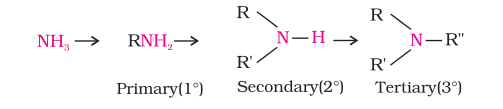

Amines are classified as primary (1°), secondary (2°) and tertiary (3°) depending upon the number of hydrogen atoms replaced by alkyl or aryl groups in ammonia molecule. If one hydrogen atom of ammonia is replaced by R or Ar , we get RNH2 or ArNH2, a primary amine (1°). If two hydrogen atoms of ammonia or one hydrogen atom of R-NH2 are replaced by another alkyl/aryl(R') group, what would you get You get R-NHR', secondary amine. The second alkyl/aryl group may be same or different. Replacement of another hydrogen atom by alkyl/aryl group leads to the formation of tertiary amine. Amines are said to be 'simple' when all the alkyl or aryl groups are the same, and 'mixed' when they are different.
